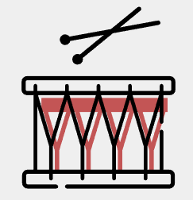

Percussion
Percussion instruments produce sound by beating or scraping them using a beater, hand, or similar instrument.
There are two broad categories, namely pitched percussion instruments, and unpitched percussion instruments.
Pitched percussion produce notes with an identifiable pitch.
Different Types of Percussion
Some pitched percussion can be tuned. Examples of some of those instruments includes:
- Marimba
- Vibraphone
- Tubular Bells
Some examples of unpitched percussion are:
- Cymbals
- Tambourine
- Gong
- Triangle